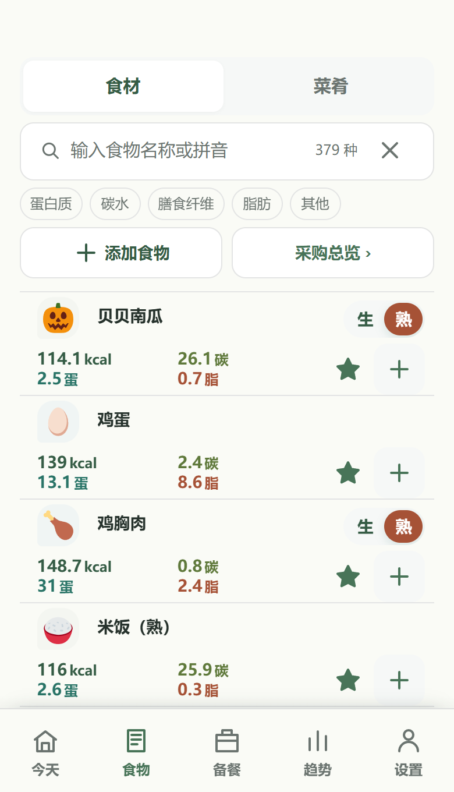
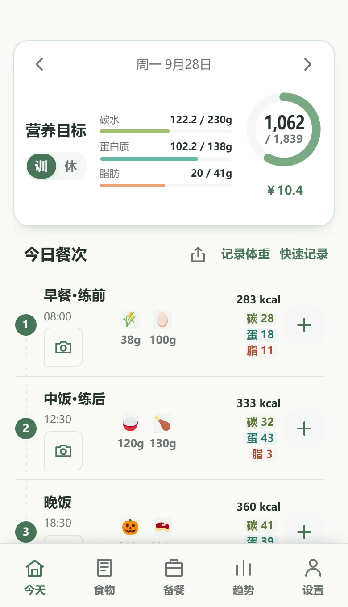
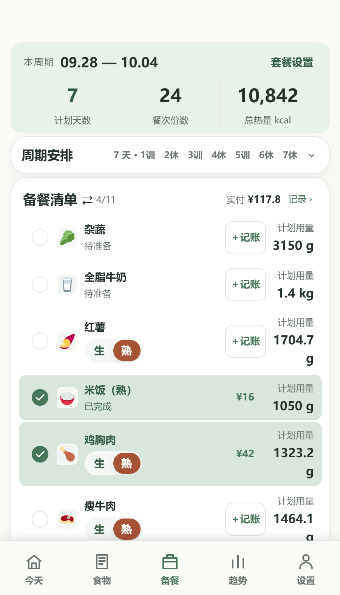
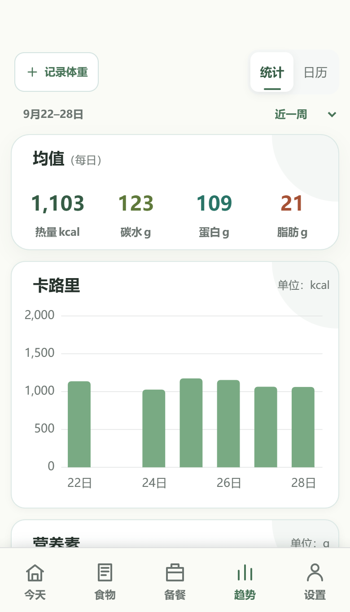
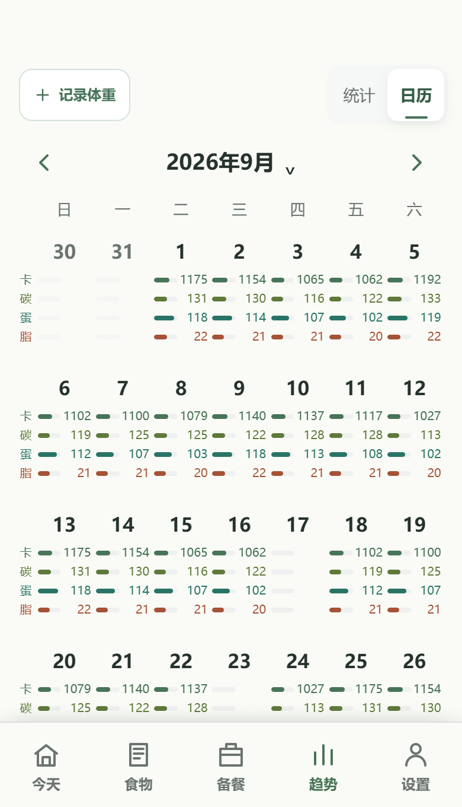
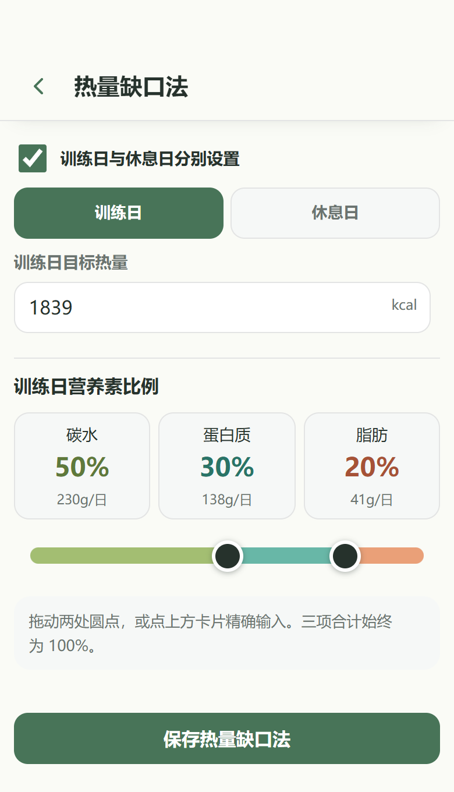
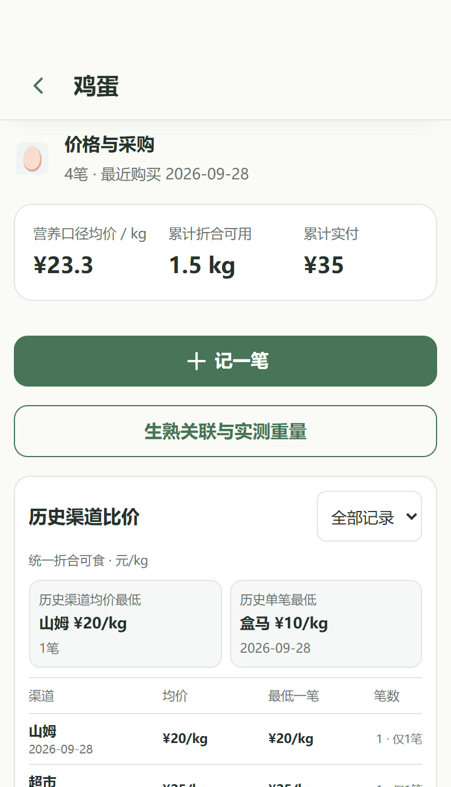

查食物，处理生熟与可食重量。
食材和菜肴集中检索，支持拼音、分类与收藏。食材可记录购买量、去除不可食部分后的重量和熟重，已记录的换算规则可复用到记餐与备餐。
食物库 · 生熟切换 · 克重换算

HarmonyOS · 2.4 WebView 留档
从营养目标、逐餐记录到备餐采购和体重复盘，食由己把饮食管理放在同一条日常流程里。无需账号，记录留在本机。

这不是食物热量表的堆叠。食物克重会影响当天营养目标；备餐和采购记录会回到成本与用量；趋势和复盘再帮助调整下一阶段。每个界面都尽量保留直接操作的入口。
食材和菜肴集中检索，支持拼音、分类与收藏。食材可记录购买量、去除不可食部分后的重量和熟重，已记录的换算规则可复用到记餐与备餐。
食物库 · 生熟切换 · 克重换算

按周期安排餐食后，可在菜肴与原材料视图间切换，汇总计划用量、采购情况与估算费用。缺少价格记录时保留提示，不把未知成本当作零。
周期套餐 · 原料视图 · 成本估算

热量、碳水、蛋白质、脂肪与饮食花费按时间查看；点选图表可读具体数值。月历把记录分布铺开，让空白日和已完成日都清楚可见。
趋势图 · 营养月历 · 体重复盘


基础代谢、活动系数与热量缺口形成建议目标；训练日与休息日可分别设热量和碳蛋脂比例。体重记录进入复盘时，调整仍由使用者确认。
热量缺口法 · 分日目标 · 人工确认

每笔记录包含食物、渠道、重量和实付；同一种食物可比较整体均价、最便宜渠道均价与最便宜单次采购。成本按吃掉的食物克重折算。
采购渠道 · 历史均价 · 饮食成本

前端由 HTML、CSS 和 JavaScript 构成；HarmonyOS 工程以 ArkTS WebView 加载本地 rawfile，并桥接窗口避让、数据传输、体重接口和桌面营养卡片。饮食记录主要保存在本地，餐食照片存于 IndexedDB。
本仓库保留 2.4 WebView 实现和演示页面。新的 ArkUI／ArkTS 重构在原项目继续，旧版不会被覆盖成一份无法运行的混合代码。